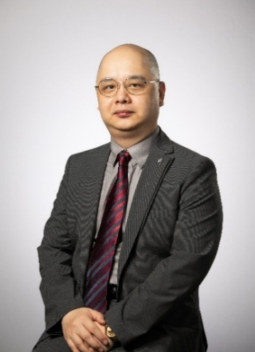

Keynote Speakers
Cyberworlds 2025 Conference
Featured Speaker
Prof. Bin SHENG
Professor, Shanghai Jiao Tong University
Title: REVERIE: A deep reinforcement learning-based VR sports system to combat adolescent obesity
Abstract: Adolescents with overweight can improve not only their physical fitness but also their mental health through physical activity. However, they often face multiple barriers, such as insufficient motivation and skills, low self-esteem, and negative peer pressure. In our research, we have developed an advanced virtual reality (VR) sports system specifically designed for adolescents, named REVERIE. This system integrates deep reinforcement learning and focuses on guidance, delivering an immersive virtual sports experience. REVERIE consists of three core components: a VR sports environment, VR sports guidance, and VR sports visualization. To ensure the safety of the VR sports environment, we adopt an iterative human-in-the-loop optimization process. We have proposed a two-stage deep reinforcement learning method based on templates and feedback: in the template stage, the artificial virtual agent acquires fine-grained sports skills; in the feedback stage, it is personalized to each participant. To enhance the VR sports visualization, we have integrated a sports-oriented immersion enhancement module into REVERIE. Quantitative results show that REVERIE outperforms existing methods in terms of both safety and user experience. This research highlights the potential of VR sports as an innovative sports management approach to benefit overweight adolescents.
Biography
Bin Sheng obtained his Ph.D. degree in Computer Science and Engineering from The Chinese University of Hong Kong in 2011. He currently serves as a Full Professor at the Department of Computer Science and Engineering, Shanghai Jiao Tong University. His research interests span virtual reality, machine learning, and medical data analysis. His work has been published in top-tier journals, including Nature Medicine, Nature Communications, IEEE Transactions on Pattern Analysis and Machine Intelligence (TPAMI), IEEE Transactions on Visualization and Computer Graphics (TVCG), and International Journal of Computer Vision (IJCV). Dr. Sheng holds editorial roles as Managing Editor of The Visual Computer and Associate Editor of the Journal of Virtual Reality and Intelligent Hardware. He has also contributed significantly to conference organization, serving as Program Co-Chair of Computer Graphics International (CGI) from 2020 to 2022, and Conference Co-Chair of CGI (2023–2024) and CASA 2024. Additionally, he was AI Challenge Co-Chair for DeepDRiD (ISBI 2020), DRAC (MICCAI 2022), and MMAC (MICCAI 2023). In recognition of his contributions, he received the Outstanding Contribution Award from the Computer Graphics Society in 2023.
Featured Speaker

Prof. Haoran Xie
Professor & Person-in-Charge, Division of Artificial Intelligence, Lingnan University, Hong Kong
Associate Dean, School of Data Science, Lingnan University, Hong Kong
Title: Advancing Structured Sentiment Understanding with Large Language Models: Reasoning, Multi-Task Learning, and Prompt-Based Augmentation
Abstract: Large Language Models (LLMs) are transforming sentiment analysis with more accurate, interpretable, and scalable solutions. This keynote introduces three recent advances: RVISA, which integrates rationale generation and verification to enhance implicit sentiment detection; MT-ISA, which uses automatic weight learning to manage data- and task-level uncertainties in multi-task learning; and STAR, which applies stepwise task augmentation to improve aspect sentiment quad prediction. Across benchmark datasets, these methods achieve state-of-the-art results, offering practical pathways to deploy human-aligned, context-aware, and trustworthy LLM-based sentiment analysis in real-world applications.
Biography
Prof. XIE Haoran is the Professor and Person-in-Charge at the Division of Artificial Intelligence, Associate Dean of the School of Data Science, and the Director of the LEO Dr David P. Chan Institute of Data Science at Lingnan University, Hong Kong. He has 459 research publications, including 275 journal articles. He is the Editor-in-Chief Computers & Education: Artificial Intelligence, Computers & Education: X Reality, and Artificial Intelligence in Language Education. His totally Google Scholar citation counts is 26,054, h-index is 64, and i-10 index is 223. He has also been selected as the World’s Top 2% Scientists from 2021.
Featured Speaker
Prof. Zhigeng Pan
Director, Institute of Metaverse, Nanjing University of Information Science And Technology, China.
Title:AI-enabled Metaverse and its Creative Applications
Abstract: In 2021，Metaverse became a hot topic around the world, and 2021 is recognized as the meta year of Metaverse. This talk will introduce the research results in the field of Metaterse enabled by intelligence techniques. Metaverse is an integrated techniques including block-chain，interaction, graphics/game，artificial intelligence，network/computing power，Internet of Things）. This talk discusses these techniques briefly, then introduce some typical applications （education metaverse，culture metaverse，military metaverse and medical metaverse）. Key techniques are explained, especially the engaged AI techniques. Finally the future research directions are discussed.
Biography
Prof. Zhigeng Pan got his Ph.D degree in 1993, and he became a full professor in Zhejiang University in 1996 because of his excellent academic performance. He has published more than 200 technical papers on important journals (such as PAMI, TVCG, IEEE Multimedia,..) and conferences (such as ACM Multimedia, IEEE VR, ICCV, et al ). He is a member of IEEE, ACM SIGGRAPH. His research interests include virtual reality, computer graphics and HCI. Currently, he is the Editor-in-Chief of international journal Metaverse.
Main research fields include VR/AR, HCI，Virtual Human, and Metaverse. The applications are focusing in the fields of education, medical care, culture and sight-seeing. He has got two national level awards and six other awards.